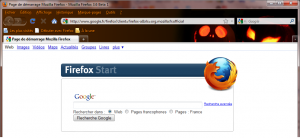
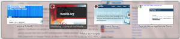

31 octobre 2009
Firefox 3.6 Bêta 1 disponible !
 La bêta 1 de Firefox 3.6 viens de sortir en téléchargement ! Quoi de neuf dans cette nouvelle version ?
La bêta 1 de Firefox 3.6 viens de sortir en téléchargement ! Quoi de neuf dans cette nouvelle version ?


[/caption] Navigation améliorée Firefox peut maintenant afficher l'aperçu d'un onglet, cependant cette fonction est désactivée par défaut. Pour l'activer, vous devez définir le paramètre "browser.ctrlTab.previews" à "true" dans about:config. Une fois activé, lorsque vous appuyez sur Ctrl + Tabulation pour changer d'onglet, vous verrez un aperçu de tout vos onglets un peu à la Windows. [caption id="attachment_466" align="aligncenter" width="300" caption="Aperçu des onglets"]

[/caption]- Le support du mode plein écran à été ajouté pour les vidéos utilisant la balise <video> en HTML5 : un bouton à été ajouté et un clic droit sur une vidéo permet aussi d'accéder à ce mode.
- Un lien ouvert dans un nouvel onglet s'ouvrira à droite de l'onglet actif.
- Aperçu des onglets dans la barre des tâches de Windows 7 en survolant Firefox.
- about:support Cette page fourni un rapport détaillé de votre version de Firefox avec le numéro de la version, les préférences modifiées, les extensions installées ainsi que d'autres informations. Cela peut être utile par exemple lorsque vous reportez un bug.
- about:memory Cette page affiche la mémoire utilisée par Firefox.
- Support du glisser déposer
- CSS : @font-face supporte le format Web Open Font Format
- CSS : Possibilité de plusieurs images de fond avec background-image.
- CSS : Possibilité de définir la taille de l'image de fond avec -moz-background-size
- Gestion de l'orientation avec les appareils disposants d'un accéléromètre !
- ...et plein d'autre choses. Pour une liste complète allez voir la page wiki réservée au développeurs (en anglais).
- Gecko 1.9.0 : Firefox 3.0 et Songbird 1.2/1.3/1.4
- Gecko 1.9.1 : Firefox 3.5
- Gecko 1.9.2 : Firefox 3.6, Songbird 1.7 ? et Fennec (Firefox Mobile)
- Gecko 1.9.3 : Firefox 3.7
Commentaires 0
Aucun commentaire.